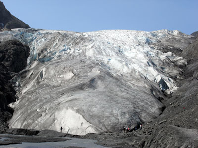
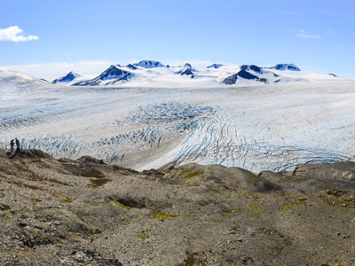
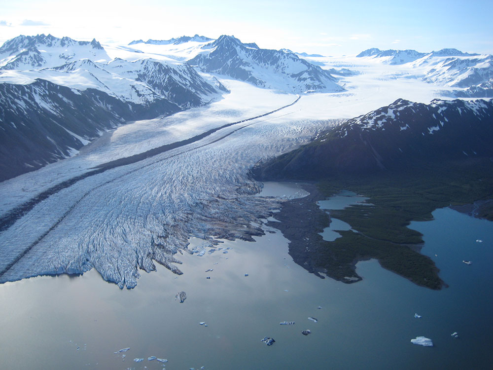
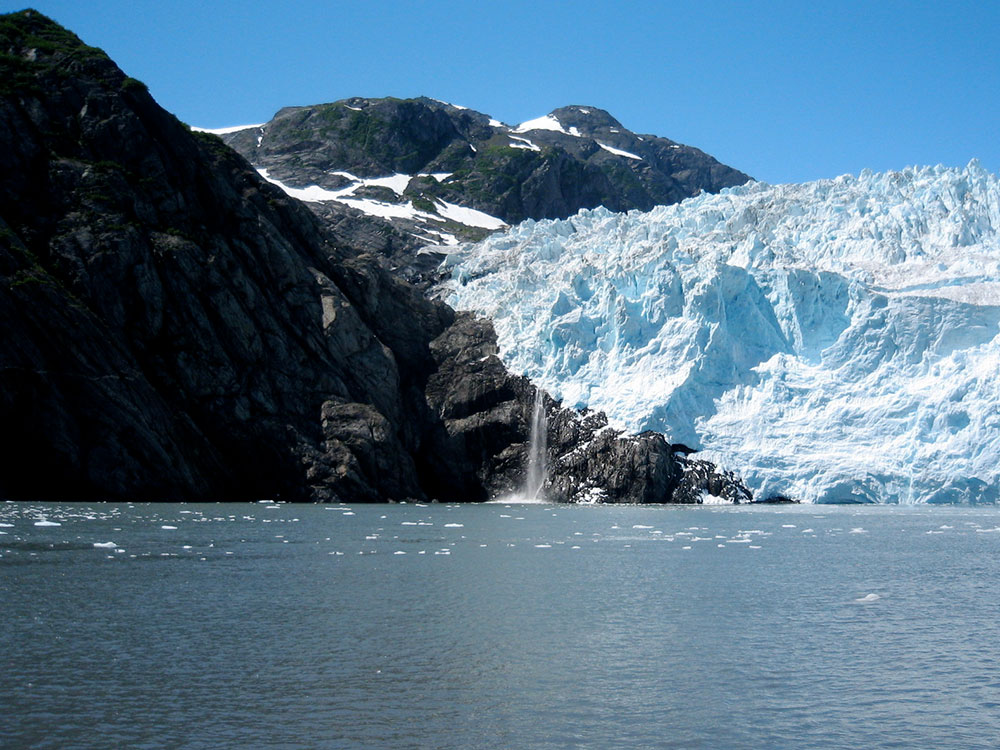
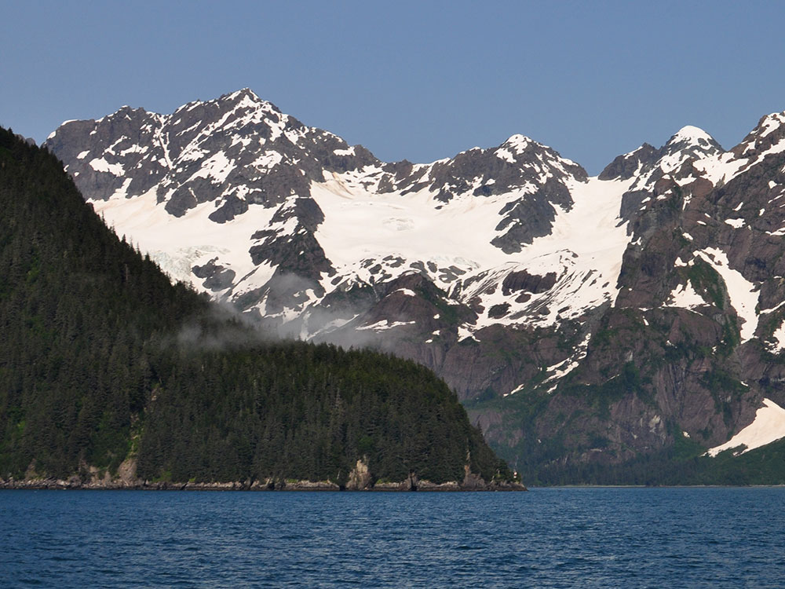

Vast coastal wilderness of glaciers, fjords, and icefields where rugged mountains meet the ocean and abundant marine wildlife thrives.
Kenai Fjords Visitor Center (Seward) and Exit Glacier Nature Center: Open daily from about Memorial Day through Labor Day (hours vary)
Exit Glacier Road: Usually open to cars from May to fall; closed to cars in winter (open to skiing, snowshoeing, and snowmachines)
Additional fees may apply for tours, camping, or transportation
How to Get There
From Anchorage (126 mi): Take AK-1 S (Seward Highway) along Turnagain Arm, continue onto AK-9 S, and follow the Seward Highway directly into Seward, then follow signs to the Exit Glacier area or the harbor for park access.
Overview
Kenai Fjords National Park protects 669,984 acres of ice, rock, and sea on the southern coast of the Kenai Peninsula, near the town of Seward. More than half of the park is covered by the Harding Icefield, a 700-square-mile sheet of ice that is one of the largest icefields in the United States. Nearly 40 glaciers flow out from the icefield. Some, like Exit Glacier, end on land, while tidewater glaciers such as Aialik, Holgate, and Northwestern calve directly into the sea. Over thousands of years, these glaciers carved the deep fjords along the coast, which are now home to whales, sea lions, sea otters, and huge seabird colonies.
The coast is the traditional homeland of the Sugpiaq (Alutiiq) people. Kenai Fjords became a national monument in 1978 and a national park in 1980. It is the smallest of Alaska's national parks and one of the easiest to reach, just a 2.5-hour drive from Anchorage. Today the park draws more than 400,000 visitors a year. Most come to cruise into the fjords on a boat tour, to walk to Exit Glacier, where signs mark how far the glacier has retreated over the past century, and to hike the challenging Harding Icefield Trail to a view of the vast icefield.
Park Sections
The park has two main areas. The Exit Glacier area is the only part of the park reachable by road. It lies at the end of Exit Glacier Road (Herman Leirer Road), about 12 miles north of Seward, and has a nature center, a walk-in campground, and trails to Exit Glacier and the Harding Icefield. The rest of the park is the remote coastal fjords and the icefield itself. These areas include Aialik Bay, Holgate Arm, Northwestern Fjord, McCarty Fjord, and Nuka Bay, and they can be reached only by tour boat, water taxi, kayak, or floatplane from Seward or Homer. Many boat tours also explore Resurrection Bay and the Chiswell Islands, which border the park.
Sightseeing and Exploring the Park
The park has no long scenic drive, but the short road to Exit Glacier passes signs marking where the glacier's edge was in different years. These signs make the glacier's retreat easy to see. The most popular way to see the park is on a glacier and wildlife cruise from Seward's small boat harbor. Half-day tours stay mainly in Resurrection Bay, while full-day tours (about 6 to 9 hours) travel into the park's fjords to watch tidewater glaciers such as Aialik and Holgate calve into the sea. Along the way, passengers often see humpback whales, orcas, sea otters, Steller sea lions, and puffins. Major Marine Tours and Kenai Fjords Tours are the main operators. Flightseeing trips from Seward and Homer fly over the Harding Icefield and the coastline.
Hiking
The park's maintained trails are in the Exit Glacier area. Easy options include the 1-mile, partly paved Glacier View Loop and the Edge of the Glacier Trail, which climbs to overlooks near the glacier's face. When the river levels allow, visitors can also walk across the outwash plain toward the toe of the glacier. The park's signature hike is the Harding Icefield Trail, a strenuous 8.2-mile round trip that gains about 1,000 feet per mile through forest, meadows, and alpine terrain to an overlook of the icefield. The upper trail is often snow-covered into July. On the coast, there are only short trails near the public use cabins, and most coastal exploring is done by kayak or on foot along the beaches.
Other Activities
Beyond boat tours, sea kayaking is one of the best ways to experience the park. Guided day trips paddle in Resurrection Bay or take a water taxi to Aialik Bay or Northwestern Fjord to paddle among icebergs near the face of tidewater glaciers. Multi-day trips camp along the coast. Guided ice hiking and ice climbing trips on Exit Glacier and flightseeing trips with glacier landings are also available. In summer, rangers lead programs at Exit Glacier, and fishing charters leave from Seward for salmon and halibut. In winter, the closed Exit Glacier Road becomes a route for cross-country skiing, snowshoeing, dog mushing, and snowmachining. In Seward, the Alaska SeaLife Center is a popular place to learn about the region's marine wildlife.
Flora and Wildlife
Kenai Fjords is known for its marine wildlife. Humpback whales and orcas are often seen from the tour boats in summer, gray whales pass by on their spring migration, and fin whales, Dall's porpoises, sea otters, harbor seals, and Steller sea lions are also common. The coastline and nearby Chiswell Islands host large seabird colonies, including horned and tufted puffins, common murres, and black-legged kittiwakes. On land, American black bears are frequently seen around Exit Glacier, and mountain goats graze on the cliffs above the fjords. Moose and marmots are also found here. The land near Exit Glacier shows how plants return after glaciers retreat, from bare rock to willows and alders to Sitka spruce and hemlock rainforest.
Access
The park is on the Kenai Peninsula in Southcentral Alaska. Its gateway town, Seward, is about 126 miles (2.5 hours) south of Anchorage along the Seward Highway, a National Scenic Byway. In summer, the Alaska Railroad's Coastal Classic train runs daily between Anchorage and Seward, and motorcoach shuttles and cruise ships also arrive in Seward. From Seward, visitors can drive or take a private shuttle about 12 miles to Exit Glacier. The rest of the park is reached by tour boat, water taxi, or floatplane. The closest major airport is Ted Stevens Anchorage International Airport.
Seasons
The park is open all year, but most visitors come from late May to early September, when the nature center, visitor center, and full-day boat tours operate. Summer brings long days, cool temperatures, frequent rain, and the best wildlife viewing, with puffins nesting from about May through August. Boat tours begin in spring with gray whale tours and continue into fall. Exit Glacier Road is not plowed in winter and usually opens to cars in May, depending on snow. In fall, storms become more frequent and services wind down. In winter, the Exit Glacier area is open to skiers, snowshoers, dog mushers, and snowmachiners when there is enough snow.
Camping and Lodging
The Exit Glacier area has a small, free walk-in tent campground (12 first-come, first-served sites) that is open in summer. On the coast, the park rents public use cabins at Aialik Bay, Holgate Arm, and North Arm in summer, reached by water taxi or floatplane, and the Willow Cabin near Exit Glacier is available in winter. Reservations are made on Recreation.gov. The privately run Kenai Fjords Glacier Lodge at Pedersen Lagoon in Aialik Bay offers all-inclusive wilderness stays inside the park. Most visitors stay in Seward, which has hotels, inns, and bed-and-breakfasts, including the historic Van Gilder Hotel and several lodges along Exit Glacier Road, plus city campgrounds along the waterfront. Moose Pass, Cooper Landing, and Girdwood offer more options within 1 to 1.5 hours, and many visitors stay in Anchorage and visit as a long day trip.
Visitor Centers
The Kenai Fjords National Park Visitor Center is in Seward's small boat harbor, steps from where the boat tours depart. It has exhibits, a film, a bookstore, and rangers who can help with trip planning, and it is open daily in summer. The Exit Glacier Nature Center at the Exit Glacier trailhead has exhibits, ranger programs, and information on trail conditions in summer. In the off-season, information is available at the park headquarters in Seward.
Things to Do
Explore Alaska's Glacier-Carved Coastal Wilderness
Kenai Fjords National Park protects a spectacular landscape of fjords, glaciers, mountains, and coastal ecosystems on Alaska's Kenai Peninsula. The park is dominated by the Harding Icefield, one of the largest icefields in the United States, which feeds dozens of glaciers flowing toward the ocean. Most of the park is accessible only by boat or air, creating a true wilderness experience.
Visit Exit Glacier
Exit Glacier is the only area of Kenai Fjords National Park accessible by road. Visitors can walk a network of trails leading to viewpoints of the glacier while learning how glacial retreat has reshaped the landscape over time. Ranger-led programs and interpretive exhibits are available during the summer season.
Take a Kenai Fjords Wildlife and Glacier Cruise
Boat tours departing from Seward are among the most popular ways to experience the park. Cruises provide opportunities to view tidewater glaciers, rugged fjords, marine wildlife, seabird colonies, and dramatic coastal scenery that cannot be reached by road.
See the Harding Icefield
The Harding Icefield is the centerpiece of the park, feeding numerous glaciers that carve the landscape. Visitors who hike to viewpoints above Exit Glacier can experience sweeping views of this immense field of ice stretching toward the horizon.
Enjoy Exceptional Wildlife Viewing
The park's land and marine environments support a rich variety of wildlife. Visitors frequently observe whales, sea otters, harbor seals, puffins, bald eagles, and seabirds during boat tours, while black bears may be encountered along hiking trails near Exit Glacier.
Go Kayaking Among Glaciers and Fjords
Sea kayaking offers a more intimate way to experience Kenai Fjords. Guided trips allow visitors to paddle through protected waters while viewing glaciers, icebergs, wildlife, and remote coastal landscapes from water level.
Experience Backcountry Adventure
Beyond the developed Exit Glacier area, much of the park is accessible only by boat, floatplane, or challenging backcountry routes. Visitors seeking wilderness experiences can enjoy kayaking, glacier exploration, hiking, and camping in remote coastal environments.
Top Trails
Harding Icefield Trail
Length: Approximately 7.8 miles round trip
Elevation Gain: Approximately 3,500 feet
Difficulty: Strenuous
Considered one of Alaska's premier day hikes, the Harding Icefield Trail climbs from the Exit Glacier valley through forests, meadows, and alpine terrain to panoramic views of the vast Harding Icefield. The route offers dramatic scenery throughout the climb and is the park's signature hike.
Glacier View Loop Trail
Length: Approximately 1 mile loop
Elevation Gain: Minimal
Difficulty: Easy
This accessible trail starts near the Exit Glacier Nature Center and provides panoramic views of Exit Glacier while passing through forests and landscapes shaped by recent glacial retreat.
Exit Glacier Overlook Trail
Length: Approximately 1.2 miles round trip from the Nature Center area
Elevation Gain: Moderate
Difficulty: Easy to Moderate
This well-maintained trail leads to elevated viewpoints overlooking Exit Glacier and the valley it has carved. It provides excellent glacier views without the strenuous climb required for the Harding Icefield Trail.
Toe of the Glacier Trail
Length: Short walking trail
Elevation Gain: Minimal
Difficulty: Easy
This popular walk allows visitors to get closer to the terminus of Exit Glacier while viewing evidence of the glacier's retreat and learning about the dynamic processes that continue to shape the landscape.
This article uses material from the Wikipedia article "Kenai Fjords National Park", which is released under the Creative Commons Attribution-Share-Alike License 3.0
This article uses material from nps.gov "Kenai Fjords National Park", "Exit Glacier Area", "Harding Icefield Trail", and "Operating Hours & Seasons"
Featured Locations and Trails

Reywas92, CC BY-SA 3.0, via Wikimedia Commons; Image Size Adjusted

Exit Glacier
Easily accessible glacier flowing from an icefield into a forested valley, offering close-up views, interpretive trails, and dynamic ice formations.

Pepahavlin, CC BY-SA 4.0, via Wikimedia Commons; Image Size Adjusted

Harding Icefield
Massive expanse of ice and snow covering mountain peaks and valleys, offering sweeping alpine views and access to one of the largest icefields in North America.

.jpg){kind=link}


